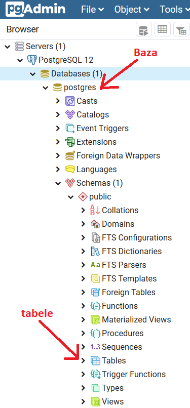

Spring Data¶
Zadania do wykonania przed zajęciami¶
Zapoznaj się z pojęciem relacyjnej bazy danych np. tutaj: https://www.samouczekprogramisty.pl/wstep-do-relacyjnych-baz-danych/
Zapoznaj się z pojęciem mapowania obietkwo-relacyjnego: https://bit.ly/3azUiy7
Utrwal sobie podstawowe pojęcia :
Prześledź jak korzystać z adnotacji określających relacje między tabelami na poziomie kodu (przykład z wbudowaną bazą danych H2): https://gniado.it/2018/08/15/kurs-springa-czesc-2-adnotacje-jpa-i-baza-danych/
Zainstaluj PostgreSQL 12 Server + pgAdmin 4 + Stack Builder (opcjonalnie) + Command Line Tools: https://www.postgresql.org/download/
Note
Podczas instalacji proszę wybrać domyślne ustawienie locale: Polish, Poland. Podczas instalacji tworzony jest użytkownik (administrator) bazy danych. Zapamiętaj hasło do niego. Zazwyczaj domyśly login to postgres. Niektóre instalatory mogą poprosić o jego nadanie lub zaczerpnąć np. nazwę zalogowango użytkownika w systemie operacyjnym.
Zaloguj się do serwera za pomocą interfejsu graficznego pgAdmin i sprawdź czy utoworzyła się automatycznie baza danych:
Jeżeli baza się nie utworzyła, kliknij prawym przyciskiem na Databases -> Create i uzupełnij nazwę bazy.
Obejrzyj / wykonaj tutorial: https://youtu.be/_47nGrKz2ds
{kind=link}
Zadania do realizacji podczas zajęć¶
Note
Rozwój aplikacji będzie kontynuwany w ramach następnych laboratoriów. Rozwijając projekt proszę stosować zasady git flow, które będą podlegać ocenie. Na masterze powinny się znaleźć tylko i wyłącznie wersje otagowane, gotowe do oceny.
Schemat tagowania:
[nr laboratoriów].[nr ćwiczenia].[nr poprawki]
Ćwiczenie I - połączenie bazy danych¶
Zadaniem aplikacji z tego ćwiczenia jest utworzenie tabeli w bazie danych i wypełnienie jej przykładowymi danymi.
Analogicznie do tutorialu z punktu 7. uwtórz projekt spring bootowy i zamodeluj obiekt Product (analogicznie do obiektu Car w tutorialu), który jest zdefiniowany następująco:
Połącz się do wbudowanej bazy danych H2 i wypełnij ją z poziomu kodu kilkoma (2-5) przykładowymi produktami ferowanymi przez jakiś wobrażony sklep.
Zaloguj się do bazy danych z poziomu przeglądarki i sprawdź czy produkty zostały prawidłowo umieszczone w tabeli.
{kind=link}
Note
Aby możliwe było połączenie do wbudowanej bazy danych H2 aplikacja, w której ją konfigurowaliśmy musi być uruchomiona
Zamiast korzystać z bazy H2 połącz się do bazy danych PosgtreSQL i uruchom aplikację. Pamiętaj o odpowienich zmianach w pliku application.properties:
spring.datasource.url=jdbc:postgresql:... spring.datasource.username=... spring.datasource.password=...
Wszystkie wymagane dane uzupełnij na podstawie wykonanej wcześniej konfiguracji serwera PostgreSQL.
Pamiętaj również o dadaniu odpowiedniej zależności w pom.xml:
<dependency> <groupId>org.postgresql</groupId> <artifactId>postgresql</artifactId> </dependency>
Note
PosgreSQL Server musi być uruchomiony na komputerze aby możliwe było ustanowienie połączenia.
Zaloguj się do pgAdmin i sprawdź czy tabela została poprawnie utworzona i wypełniona.
Zapoznaj się z opcjami konfiguracji następujących właściwości aplikacji:
spring.jpa.hibernate.ddl-auto spring.jpa.show-sql
Ćwiczenie II - relacje¶
Zadaniem aplikacji z tego ćwiczenia jest utworzenie tabel będących w relacjach jeden do wielu i wiele do wielu w bazie danych, oraz wypełnienie ich przykładowymi danymi.
Rozbuduj aplikację z ćwiczenia pierwszego rozszerzając ją o dodatkowe obiekty, zgodnie z przedstawionym diagramem:
{kind=link}
za pomocą odpowednich adnotacji w kodzie określ zależności pomiędzy encjami,
zauważ, że słówkiem kluczowym w języku SQL jest słowo order, użyj adnotacji @Table do zmiany nazwy tabeli aby uniknąć błędów w automatycznie genrowanych poleceniach SQL,
klasa DbMockData służy wyłącznie do wypełnienia bazy danych przykładowymi danymi, przykład implementacji:
@Component
public class DbMockData {
private ProductRepository productRepository;
private OrderRepository orderRepository;
private CustomerRepository customerRepository;
@Autowired
public DbMockData(ProductRepository productRepository, OrderRepository orderRepository, CustomerRepository customerRepository) {
this.productRepository = productRepository;
this.orderRepository = orderRepository;
this.customerRepository = customerRepository;
}
@EventListener(ApplicationReadyEvent.class)
public void fill() {
Product product = new Product("Korek", 2.55f, true);
Product product1 = new Product("Rura", 5f, true);
Customer customer = new Customer("Jak Kowalski", "Wrocław");
Set<Product> products = new HashSet<>() {
{
add(product);
add(product1);
}};
Order order = new Order(customer, products, LocalDateTime.now(), "in progress");
productRepository.save(product);
productRepository.save(product1);
customerRepository.save(customer);
orderRepository.save(order);
}
}
Uruchom aplikację.
Za pomocą konsoli H2 lub pgAdmina sprawdź czy tabele utworzyły prawidłowo i czy zostały poprawnie wypełnione. Zwróć uwagę na automatycznie wygenerowaną tabelę łącznikową.
Note
W przypadku wystąpienia błędu związanego z nieprawidłowym wykonywaniem polecenia SQL drop na tabelach bazy danych proszę się zastanowić nad pożądanym ustawieniem właściowości spring.jpa.hibernate.ddl-auto. Proszę pamiętać, że bazę danych możemy zarządzać z poziomu panelu administaratora: konsoli H2 lub pgAdmina wykonując na niej odpowiednie polecenia. W przypadku chęci zautomatyzowania procesu usuwania tabeli z poziomu kodu proszę prześledzić wątek: https://stackoverflow.com/questions/59561551/hibernate-h2-specify-drop-table-order
Sprawozdanie¶
Link do repozytorium (po wcześniejszym nadaniu uprawnień dostępu prowadzącemu)
Ćwiczenie I¶
Zrzut ekranu z konsoli H2 przedstawiający wypełnioną tabelę (podpunkt 3. ćwiczenia pierwszego)
Zrzut ekranu z pgAdmina przedstawiający wypełnioną tabelę (podpunkt 5. ćwiczenia pierwszego)
Ćwiczenie II¶
Zrzuty ekranu z konsoli H2 lub z pgAdmia przedstawiające wypełnione cztery tabele (podpunkt 3. ćwiczenia pierwszego)
Kapka teorii¶
Jak oceniasz w skali 0-10 trudność zadań ze Spring Data.
Co sprawiło najwięcej problemów.
Opisz, krótko, własnymi słowami (maks 5 zdań):
czym jest relacyjna baza danych,
czym jest ORM,
czym jest tabela łącznikowa.